教練研究 · 整理日期 2026-11-17 · 依原研究整理，不是原文全文
圖解 12｜不講標準動作，選手怎樣自己學會？
完整內容：12 CLA 教學版、12 CLA 研究版 · 回到 首頁
📌 重點摘要卡
- 一句話核心： 教練設計限制（規則、場地），讓選手自己找出有效動作。
- 關鍵數據： 三類限制：個體／任務／環境｜範例：後場角落 2 分、網上 30 cm 限高繩、3 拍內必攻
- 因果流程：
改任務或環境限制➔選手探索並自我組織➔出現適應性的有效解法 - 跨域應用： 羽球訓練：用計分規則取代反覆口頭糾正。數據模型：以限制條件引導最佳化的搜尋空間。IT 教學：專題式學習只給限制與目標，讓學生自己找解法。
❓ 試試看
想讓選手多打後場角落，你會說「要打到角落」20 次，還是把後場角落改成 2 分？ 限制導向動作學習（Constraints-Led Approach, CLA）選後者：改規則，讓選手自己找到解法。
🎬 動畫：三種限制一起塑造動作

🖼️ 練法對比與教學循環


📊 限制操控表（直接可用）
| 改甚麼 | 怎樣改 | 練出甚麼 | 量甚麼 |
|---|---|---|---|
| 得分 | 後場角落 2 分 | 拉四角 | 角落落點 % |
| 限拍數 | 3 拍內必攻 | 搶攻、提早擊球 | 第 3 拍進攻率 % |
| 時間 | 多球間隔 1.2 → 0.9 秒 | 啟動、還原 | 到位時間 |
| 網高 | 網上 30 cm 拉繩 | 平抽壓低 | 過網高度 |
🖼️ 兩個範例


🧠 延伸知識
📝 三類限制從哪裡來？
模型來自 Newell（1986）：動作是個體、任務、環境三種限制互動的結果。教練最容易改的是任務（規則、得分）和環境（場地、網高）。
📝 功能性變異不是錯誤
頂尖選手每一拍的步法都不完全一樣，但都能到位。CLA 把這種變異當作適應能力，而不是需要消除的錯誤。
💡 口令也有差別
說「打到那個圈」（外在焦點，注意結果）通常比「手肘抬高」（內在焦點，注意身體）更有幫助；但相關研究有發表偏誤的爭議，見 第 08 章。
✅ 30 秒自我測驗
❓ 1. CLA 的三類限制是甚麼？
個體、任務、環境。
❓ 2. 想練平抽壓低，可以改哪一個環境限制？
在網上 30 cm 拉一條限高繩，球要從繩下過。
❓ 3. 「任務簡化」和「任務分解」有甚麼不同？
任務簡化保留完整的「看—判斷—打」，只降低難度；任務分解把動作拆開分段練。